目次
Zuna Facecap はスマホのカメラで表情と頭の動きを読み取り、Wi-Fi で iFacialMocap 対応の PC アプリに送ります。iFacialMocap は、これらのアプリが iPhone のフェイストラッキングに使っている方式です。iPhone は必要ありません。
同じスマホで腕・指・配信デッキまで使いたい方へ： Zuna Studio でもっと をご覧ください。ご依頼いただければご利用いただけます。
かんたんな流れ： アプリをインストール → カメラを許可 → 顔から 40 cm ほどの位置にスタンドでスマホを立てる → PC アプリで iFacialMocap トラッカーを選び、アプリに表示されるスマホのアドレスを入力 → トラッキング開始 → キャリブレーションを一度。
| 対応アプリ | Warudo、VSeeFace、VNyan など、iFacialMocap／iPhone トラッカーを受け取れるアプリ。VMC プロトコルで受け取るアプリにも対応（上級者向け）。 |
| 送るもの | ARKit 形式の表情値 51 個＋頭の回転と位置、UDP ポート 49983 |
| プライバシー | 映像はスマホの中だけで解析し、録画やアップロードはしません。PC には自宅の Wi-Fi でトラッキングの数値だけを送ります。 |
| 言語 | English、한국어、日本語、简体中文（設定 → 言語） |
| お問い合わせ | maxjang123@gmail.com・設定 → ヘルプ・お問い合わせ |
1. 動作環境
| 最低 | 推奨 | |
|---|---|---|
| Android | Android 10 以降 | Android 13 以降 |
| プロセッサー | 64 ビット（ARM64）。32 ビット専用の機種にはインストールできません。 | 2021 年ごろ以降の発売で、ミドルレンジ以上のチップ |
| メモリ | 4 GB | 6 GB 以上 |
| カメラ | イン または アウト | イン。上半身も使うならアウト広角（超広角） |
| ネットワーク | スマホと PC が同じ Wi-Fi・ルーター | 5 GHz の Wi-Fi、PC は有線または 5 GHz |
| その他 | — | スマホスタンドや三脚、長時間配信には充電器 |
Galaxy S24 Ultra（Android 16） で開発・動作確認しています。60 fps のカメラ設定で顔のトラッキングは約 40 fps です。古い機種やエントリー機でも動きますが、フレームレートが下がります。遅いときは 上半身・手・60fpsトラッキング をオフにしてみてください。
アプリの 設定 → ヘルプ・お問い合わせ → 動作環境 で、お使いのスマホの Android バージョンとメモリを確認できます。メモリが少ない場合はお知らせします。
なぜ 64 ビットだけ？
顔・体・手のモデルは Google MediaPipe で動いています。古い 32 ビット機種用のライブラリまで入れるとアプリが 2 倍以上の大きさになり、そうした機種ではそもそもなめらかなトラッキングが難しいためです。
2. インストール
- Zuna Facecap をインストールします（Google Play、または受け取った APK）。
- アプリを開くと、はじめかたガイドが自動で始まります。
APK を直接インストールする場合、ブラウザやファイルアプリからのインストール許可を求められることがあります。一度だけの Android の設定です。
3. はじめての起動
最初に 5 ステップのガイドが開きます。スキップ もでき、いつでも 設定 → ヘルプ・お問い合わせ → はじめかたガイドをもう一度見る から見直せます。
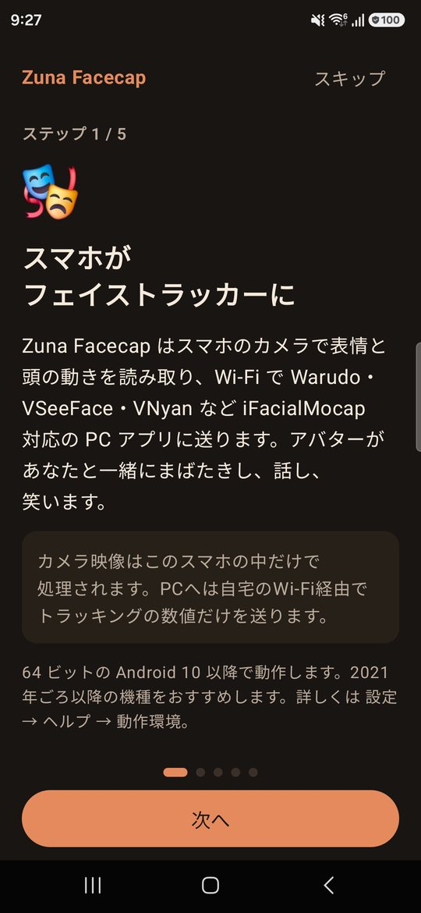
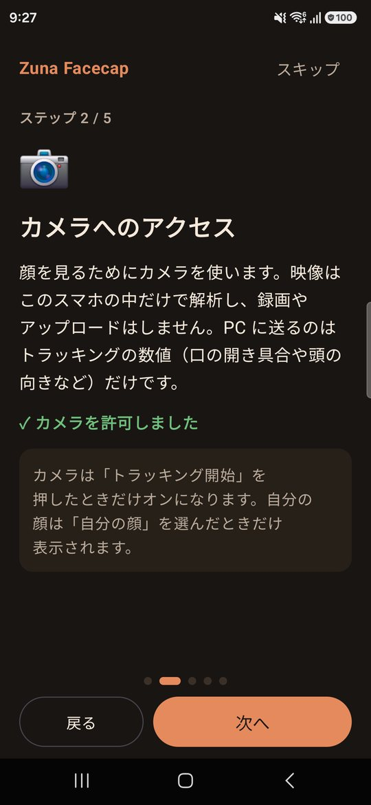
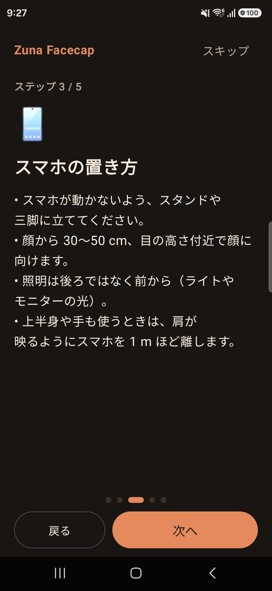
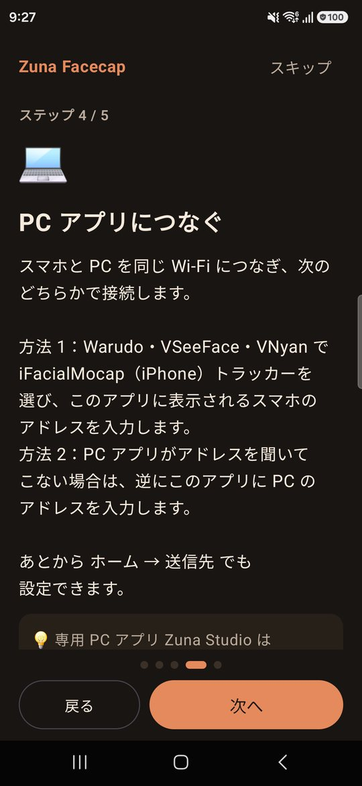
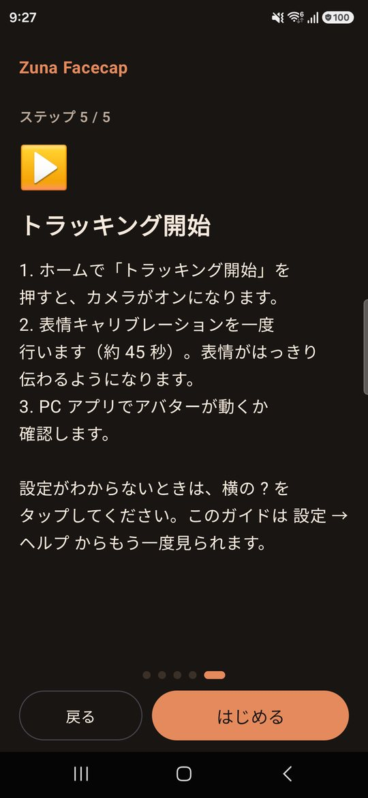
スマホの置き方
- スマホが動かないよう スタンドや三脚 に立てます。
- 顔から 30〜50 cm、目の高さ付近で顔に向けます。
- 照明は後ろではなく 前から（デスクライトやモニターの光）。
- 上半身や手 も使うときは、肩が映るようにスマホを 1 m ほど 離します。
カメラは トラッキング開始 を押したときだけオンになります。ホームにはあなたの表情をまねするキャラクターが表示され、右上の 自分の顔 を選ぶとトラッキングの点が付いたカメラ映像を確認できます。
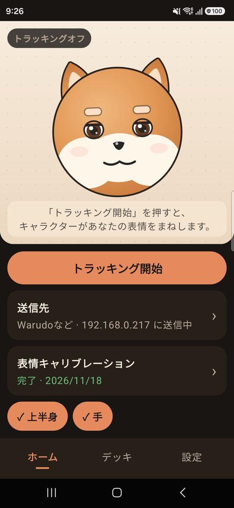
4. Warudo・VSeeFace・VNyan とつなぐ
スマホと PC を 同じ Wi-Fi につなぎます。ホームで 送信先 をタップし、PCアプリ（iFacialMocap） が選ばれていることを確認します（初期設定）。
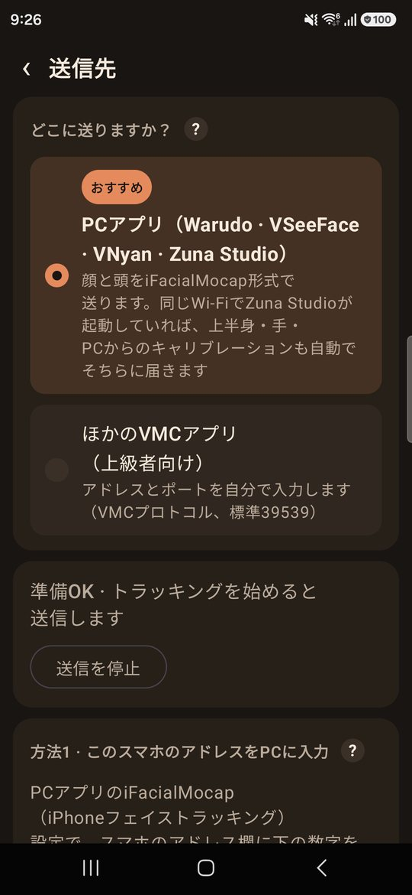
つなぎ方は 2 通りあります。どちらか一方だけ 使ってください。
| 方法1・スマホのアドレスを PC に入力 | 方法2・PC のアドレスをスマホに入力 | |
|---|---|---|
| こんなとき | PC アプリがスマホの IP アドレスを聞いてくる（VSeeFace、VNyan、Warudo） | PC アプリが受信を待つだけで、アドレスを聞いてこない |
| 入力する場所 | PC アプリ | Zuna Facecap → 送信先 → PCのアドレス |
| 入力するもの | このスマホ の下の大きな数字。例：192.168.0.178 | PC の IPv4 アドレス。例：192.168.0.217 |
| ポート | 49983（固定） | 49983（固定） |
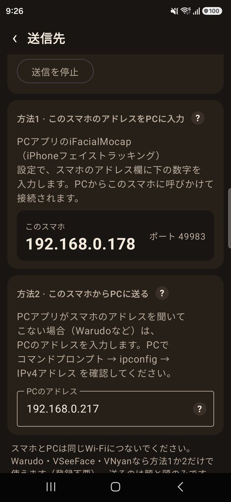
? が付いた項目はタップすると短い説明が出ます。設定がわからないときに使ってください。
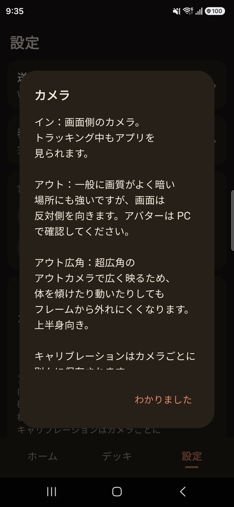
Warudo
- Warudo でキャラクターの Setup を開き、顔のトラッキングに iFacialMocap（iPhone / iFacialMocap）を選びます。
- Zuna Facecap に表示されるスマホのアドレスを入力します（方法1）。Warudo がアドレスを聞いてこない場合は、方法2 でアプリに PC のアドレスを入力します。
- スマホで トラッキング開始 を押します。
VSeeFace
- General settings → iPhone/ARKit face tracking で iFacialMocap をオンにします（Receive tracking data from iFacialMocap）。
- Zuna Facecap のスマホのアドレスを IP 欄に入力して接続します。
- スマホで トラッキング開始 を押します。スマホのトラッキングだけを使う場合、VSeeFace の Web カメラは None にしてください。
VNyan
- Settings → Tracking → ARKit / iPhone tracking で iFacialMocap を選びます。
- Zuna Facecap のスマホのアドレスを入力し、受信を開始します。
- スマホで トラッキング開始 を押します。
メニュー名はアプリのバージョンや言語によって変わります。「iFacialMocap」や「iPhone tracking」を探せば、手順は同じです。
PC のアドレスの調べ方（方法2）
- Win + R を押し、
cmdと入力して Enter。 ipconfigと入力して Enter。- 使っているアダプター（Wi-Fi またはイーサネット）の IPv4 アドレス を控えます。例：
192.168.0.217
自宅ネットワーク内のアドレスで、インターネットのアドレスではありません。
ほかのVMCアプリ（上級者向け）
iFacialMocap ではなく VMC プロトコル で受け取るアプリもあります。送信先 で ほかのVMCアプリ を選び、受信する PC のアドレスとポート（多くは 39539）を入力します。EyeBlinkLeft のような Perfect Sync の名前を使うアプリなら 大文字の名前 をオンにしてください。この方式で送るのは顔と頭だけです。
5. キャリブレーション
無表情は人によって違い、トラッカーは安静時にちょうど 0、最大でちょうど 100 になることはあまりありません。表情キャリブレーション はあなたの無表情と各表情の動く幅を測り、口を閉じればアバターも閉じ、笑えばしっかり笑うようにします。

| かかる時間 | いつ | |
|---|---|---|
| フルキャリブレーション | 約 45 秒、8 つの表情 | 最初に一度 |
| クイックキャリブレーション | 4 秒、無表情のみ | スマホを動かした後や照明が変わった後 |
| 頭の角度キャリブレーション（任意） | 約 15 秒 | スマホが顔より下や上にあるとき |
| 姿勢（任意） | 4 秒 | 上半身がオンで、スマホが斜め横にあるとき |
キャリブレーションは カメラごと に保存され、Download/ZunaFacecap/zuna-facecap-calibration.json にバックアップされます。再インストールや機種変更のときは、やり直さずに 読み込む を使ってください。
6. 設定の説明
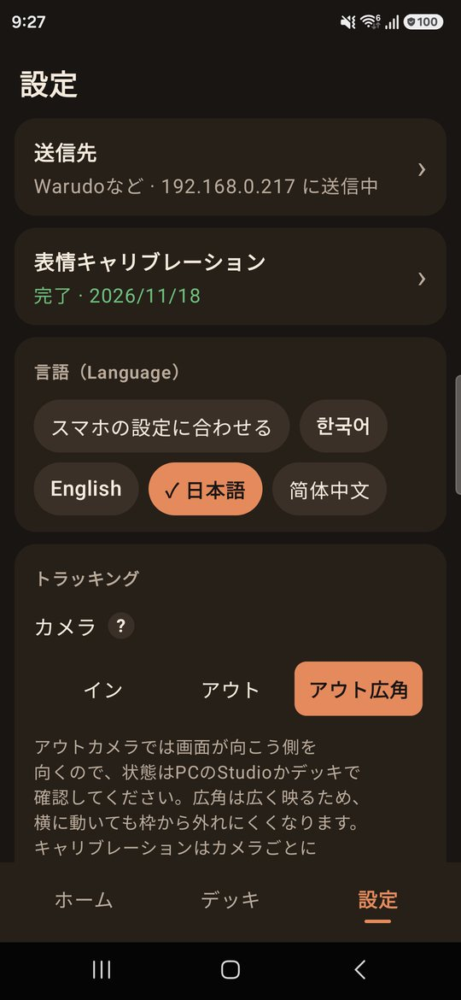
| 設定 | できること | ヒント |
|---|---|---|
| カメラ：イン／アウト／アウト広角 | どのカメラでトラッキングするか | イン はアプリを見ながら使えます。アウト は一般に高画質。アウト広角（超広角）は体を傾けてもフレームに収まります |
| キャリブレーションの音声ガイド | キャリブレーションの手順を読み上げます | 画面が見えないアウトカメラのとき |
| 上半身 | 肩と腕のトラッキング | Zuna Studio 専用。スマホを 1 m ほど離します |
| 手 | 指のトラッキング | Zuna Studio 専用。フレームレートが少し下がります |
| 60fpsトラッキング | より速いカメラ | なめらかになりますが、発熱とバッテリー消費が増えます |
| アプリを開いたらトラッキング開始 | 開始ボタンを押さずに始まります | 初期設定はオフ |
| 画面オフでもトラッキングを続ける | 画面を消してもバックグラウンドで続きます | その間は通知が表示されます。充電しながら使ってください |
| ウインク補正 | ウインクがウインクとして伝わります | 初期設定はオン |
| 飛びを防ぐ | 頭や顔が 1 フレームだけありえない速さで跳ねるのを取り除きます | 本当に速い動きは 1 フレーム（約 0.02 秒）遅れて伝わります |
| 左右を反転 | 左右を入れ替えます | PC アプリで左右が逆に見えるときだけ |
| 録画 | 表情の値を JSON で保存（映像なし） | テスト用 |
| 診断 | fps、遅延、処理装置、バッテリー、発熱 | 遅いと感じたらまずここを確認 |
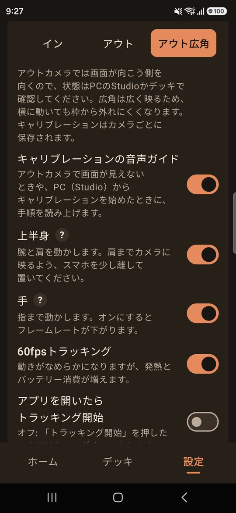
7. Zuna Studio でもっと
Zuna Studio は Zuna Facecap のために作った専用 Windows アプリです。Warudo・VSeeFace・VNyan 向けのフェイストラッキングは Studio なしで使えます。Studio を使うと 同じスマホ でアバターをもっと多く動かせて、配信全体をスマホから操作できます。
ご興味がありますか？ Zuna Studio は ご依頼制 です。Zuna Studio について問い合わせる — メールでご返信します。
なぜ Zuna Studio？
1 台のスマホから PC に届くもの：
| スマホ → Warudo / VSeeFace / VNyan | スマホ → Zuna Studio | |
|---|---|---|
| 顔と頭 | ✓ | ✓ |
| 肩と腕 | —（別のトラッカーが必要） | ✓ 同じスマホで |
| 指 | —（別のトラッカーが必要） | ✓ 同じスマホで |
| PC から始めるキャリブレーション＋スマホの音声ガイド | — | ✓ |
| スマホ・タブレットの配信デッキ | — | ✓ |
| 自分のスマホだけがアバターを動かせる（スマホ登録） | — | ✓ |
Studio で増えること
| トラッキング | アバター |
|---|---|
|
|
| 配信 | 安心 |
|
|
 スマホのデッキ（デッキタブ） |
|
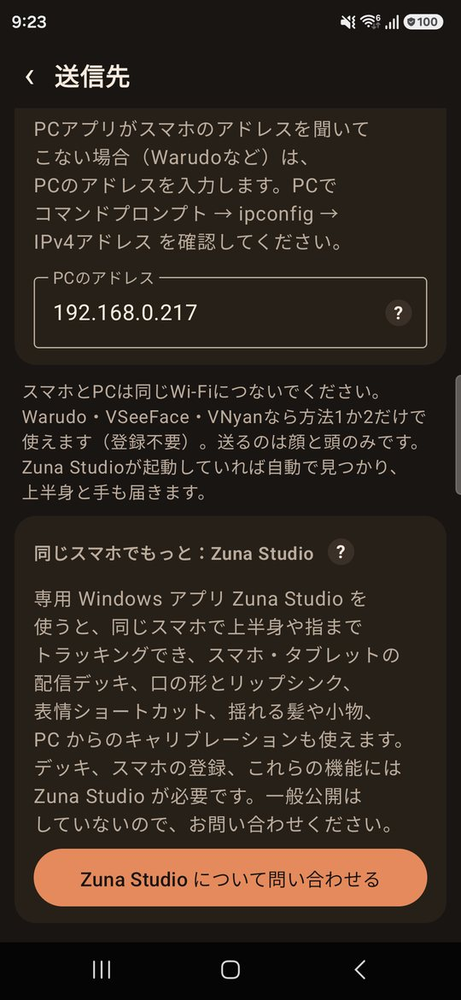 アプリ内：Studio で増えることと問い合わせボタン |
 最初に一度、PC でスマホを許可（4 桁の数字） |
こんな方におすすめ
- トラッカーを買い足さずに 腕と手 まで動かしたい VTuber
- 手元の スマホで OBS や音楽を操作 したい配信者
- カスタム構成 や提携を検討しているクリエイター・チーム
Zuna Studio の入手方法
Zuna Studio は 一般公開していません。お問い合わせいただければメールでご返信します。
- アプリで：設定 → ヘルプ・お問い合わせ → ビジネスのお問い合わせ、または Zuna Studio について問い合わせる ボタン（送信先画面、デッキタブ、設定）。短いテンプレート入りのメールアプリが開きます。
- またはメール：maxjang123@gmail.com
あなたのアバター専用の Zuna Studio をお作りします。アバターを Studio に組み込み（トラッキングに合わせた表情、上半身・指、カメラプリセット、デッキ）、あなただけの Windows アプリとしてお渡しします。ご本人専用のビルドで、ほかの方には配布しません。
お送りいただくもの
| 必要なもの | 理由 | |
|---|---|---|
| 1. アバターのファイル | 次のいずれか：VRChat アバター の Unity プロジェクトまたは .unitypackage（マテリアル・テクスチャ付きの Humanoid プレハブ）・テクスチャ付きの FBX（Humanoid リグ）・VRM ファイル（0.x または 1.0） | アバターはアプリに組み込まれます。Studio は Humanoid のボーンとシェイプキーで動かします |
| 2. シェイプキー | モデルにある表情のシェイプキー：ARKit／Perfect Sync（いちばんおすすめ）、VRChat の口の形（vrc.v_aa…）、VRM・MMD の表情、またはなし | 自動で対応付けます。ない場合はまばたき・母音・あごのボーンで動かします |
| 3. シェーダー | 使っているシェーダーとバージョン（例：lilToon 2.x、Poiyomi） | Studio は Unity 6（URP）で動きます。シェーダーによっては同じ見た目にするため対応バージョンが必要です |
| 4. ライセンス | モデルの利用規約や販売ページ（例：BOOTH）、配信での使用と改変が許可されているか | モデルはアプリの中に入ります。ライセンスで認められる範囲でのみ制作します |
| 5. そのほか（任意） | 表情・ハンドジェスチャーのアニメーション、衣装の切り替えや小物、揺れもの（PhysBone など） | 表情ショートカット、衣装の小物、揺れる髪のため。揺れものはできる範囲で移植します |
| 6. 使用環境 | スマホの機種と Android バージョン・Windows 10/11（64 ビット）、DirectX 12 対応グラフィックカード・OBS Studio と Spout2 プラグイン | Studio は Spout2 で OBS に透過背景の映像を送ります |
| 7. 配信の構成（任意） | OBS のシーン名、背景画像、シーン別 BGM、好みのカメラ構図 | 初日からデッキとステージを使えるように |
ファイルはメール添付ではなくダウンロードリンクで お送りください（Google ドライブ、Dropbox など）。パスワードは送らないでください。
完成済みのアプリに自分のアバターを読み込めないのはなぜ？
FBX や VRChat アバターは Unity エディターが変換します（マテリアル、シェーダー、Humanoid 設定）。完成した Windows アプリは単独ではそれができないため、Unity でアバターを準備して Studio と一緒にビルドします。VRM ファイルをアプリが直接読み込める版は計画中ですが、まだありません。
デッキのつなぎ方
- PC で Zuna Deck または Zuna Studio を起動します。
- スマホと PC を同じ Wi-Fi につなぎます。
- Windows ファイアウォールに聞かれたら プライベート ネットワーク を許可します。
- 最初の一度だけ PC に 4 桁の数字が表示されます。スマホと同じなら PC で許可します。
タブレットやほかのスマホでも、同じデッキをブラウザで開けます。
8. トラブルシューティング
まず確認：ホームの トラッキング中 が緑か、送信先 に 送信中 と出ているか。
アバターがまったく動かない
- スマホと PC は 同じ Wi-Fi ですか？ ゲストネットワークや一部のメッシュルーターは機器同士の通信をブロックします。
- スマホで トラッキング開始 を押しましたか？
- 方法1： PC アプリに入力した数字は このスマホ の数字と同じですか？ スマホが Wi-Fi に再接続すると変わることがあります。
- 方法2： PC のアドレスは正しいですか？（
ipconfig→ IPv4） - Windows ファイアウォール： PC アプリが プライベート ネットワーク で許可されている必要があります。Windows で Wi-Fi が プライベート ネットワークになっているかも確認してください。
- スマホや PC で VPN がオンになっていませんか？ オフにして試してください。
- Android 17： アプリに聞かれたら 付近のデバイス を許可してください（設定 → アプリ → Zuna Facecap → 権限）。
「顔が見えません」と出る、顔をよく見失う
- 前の照明を明るくしてください。暗い部屋がいちばん多い原因です。
- スマホを 30〜50 cm の距離で顔に向けてください。
- 別のカメラを試してください（設定 → カメラ）。
口が少し開いたままになる、表情が弱い
フルキャリブレーション を行ってください。スマホを動かしたり照明が変わったりしたら クイックキャリブレーション を。スマホが顔より下にあるなら 頭の角度キャリブレーション も試してください。
左右が逆になる
設定 → 表情の詳細 → 左右を反転 をオンにしてください。通常 Left は自分の左です。
トラッキングが遅い、スマホが熱くなる
- 上半身・手・60fpsトラッキング をオフにしてみてください。
- 厚いケースを外し、直射日光を避けてください。
- 設定 → 診断 で 処理装置（通常は GPU のほうが速い）と 発熱 を確認してください。
ほかのアプリに切り替えたり画面が消えたりするとトラッキングが止まる
設定 → 画面オフでもトラッキングを続ける をオンにしてください。スマホがバックグラウンドのアプリを止める場合は、Zuna Facecap をバッテリーの最適化から外してください。
9. よくある質問
iPhone や iFacialMocap アプリは必要ですか？
いいえ。Zuna Facecap が Android で同じ方式で送るので、PC アプリは iFacialMocap として認識します。
カメラの映像はどこかに送られますか？
いいえ。映像はスマホの中だけで解析し、録画やアップロードはしません。送るのはトラッキングの数値だけで、接続した PC にだけ送ります。
インターネットは必要ですか？
いいえ。トラッキングは自宅の Wi-Fi の中だけでやり取りします。インターネットはアプリの更新確認にだけ使います。
Warudo・VSeeFace・VNyan で体や手も動きますか？
これらのアプリは iFacialMocap で 顔と頭 を受け取ります。同じスマホで上半身や指まで動かすなら Zuna Studio をお使いください。
アウトカメラは使えますか？
はい。設定 → カメラ → アウト または アウト広角。画面が見えなくてもキャリブレーションできるよう、音声ガイドをオンにしておいてください。
Zuna Studio は必須ですか？
Warudo・VSeeFace・VNyan では不要です。Studio は同じスマホでもっと多くのことができます：上半身と指、配信デッキ、口の形とリップシンク、小物、PC からのキャリブレーション。ご依頼いただければご利用いただけます：Zuna Studio の入手方法。
10. 不具合の報告・お問い合わせ
設定 → ヘルプ・お問い合わせ にボタンが 2 つあります：
| ボタン | 開くもの | 自動で入るもの |
|---|---|---|
| 不具合を報告 | メールアプリ | アプリのバージョンと機種名入りの件名、機種・Android バージョン・アプリのバージョン（versionCode）・言語入りの本文。何が起きたかだけ書けば OK です。 |
| ビジネスのお問い合わせ | メールアプリ | Zuna Studio の利用、提携、コラボ向けの件名と短いテンプレート |
メールアプリがない場合は、アドレスと アドレスをコピー ボタンが表示されます。
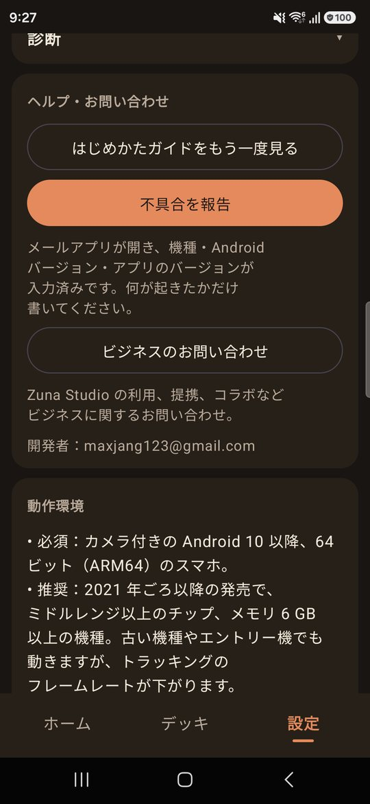
maxjang123@gmail.com